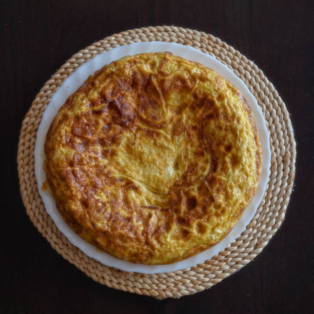
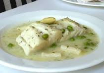
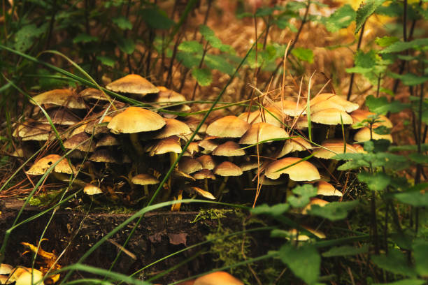

Tortilla de Patatas
Ingredientes
- 6 huevos
- 4 patatas medianas
- 1 cebolla
- Aceite de oliva
- Sal
Instrucciones
- Pela y corta las patatas en rodajas finas.
- Pela y corta la cebolla en juliana.
- Fríe las patatas y la cebolla en abundante aceite a fuego medio-bajo.
- Escurre las patatas y la cebolla.
- Bate los huevos con sal y mezcla con las patatas y cebolla.
- Cuaja la tortilla por ambos lados en una sartén.

Merluza en Salsa Verde
Ingredientes
- 4 lomos de merluza
- 4 dientes de ajo
- Perejil fresco
- 1 vaso de vino blanco
- Aceite de oliva
- Sal
Instrucciones
- Pica los ajos y el perejil muy finos.
- Dora los ajos en aceite de oliva.
- Añade el perejil y el vino blanco.
- Incorpora la merluza y cocina 3-4 minutos por cada lado.
- Mueve la cazuela para ligar la salsa.
- Sirve inmediatamente.

Bacalao al Pil-Pil
Ingredientes
- 4 lomos de bacalao desalado
- 4 dientes de ajo
- 200ml aceite de oliva
- Guindilla (opcional)
- Sal
Instrucciones
- Pela y lamina los ajos.
- Calienta el aceite con los ajos y la guindilla.
- Retira los ajos cuando estén dorados.
- Cocina el bacalao con la piel hacia arriba.
- Dale vueltas a la cazuela para emulsionar la salsa.
- Sirve con los ajos dorados por encima.

Revuelto de Setas
Ingredientes
- 300g de setas variadas
- 4 huevos
- 2 dientes de ajo
- Aceite de oliva
- Sal y pimienta
- Perejil fresco (opcional)
Instrucciones
- Lava y corta las setas en trozos pequeños.
- Pica los ajos finamente.
- Sofríe los ajos hasta dorar.
- Añade y cocina las setas.
- Bate los huevos con sal y pimienta.
- Mezcla y cuaja los huevos con las setas.